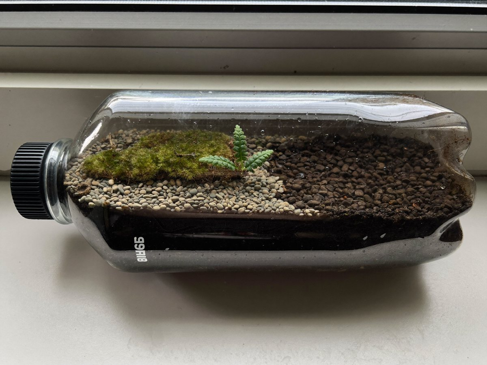

전체 단원 › 실험·활동 › 4학년 2학기 과학
페트병 미니 생태계

페트병 안에 흙, 이끼, 작은 식물을 넣고 뚜껑을 닫아 작은 생태계를 만들어 몇 주 동안 지켜봐요.
만들기 40분 · 관찰 4주 · 난이도 ★★☆ 보통
준비물
- 2L 투명 페트병 — 가운데를 잘라 아래는 그릇, 위는 뚜껑으로 써요
- 작은 자갈 — 맨 아래 물 빠짐 층
- 흙 — 화분 흙
- 이끼와 작은 풀 — 화단·공원에서 조금만 (허락받은 곳에서)
- 분무기 — 처음 한 번만 물을 뿌려요
- 관찰 일지 도안 — 아래에서 내려받아요
실험 방법
- 병 자르기
페트병 가운데를 잘라 위아래로 나눠요. - 층 쌓기
아래 병에 자갈 2cm, 흙 5cm를 차례로 넣어요. - 식물 심기
이끼를 깔고 작은 풀을 심어요. 공벌레 한두 마리를 넣고 싶다면 먹이가 되는 마른 낙엽 몇 장도 함께 넣어 주세요. - 물 주고 닫기
분무기로 흙이 촉촉해질 만큼만 물을 뿌리고, 위쪽 병을 덮어 테이프로 붙여요. 뚜껑도 닫아요. - 관찰하기
햇빛이 직접 들지 않는 밝은 창가에 두고 일주일에 두 번 관찰 일지를 써요. 병 안쪽 물방울과 식물 상태를 봐요.
관찰해 봐요
- 물을 다시 주지 않았는데 병 안이 촉촉한 까닭은 무엇일까요?
- 아침과 저녁에 병 안쪽 물방울 양이 다른가요?
- 식물이 시들었다면 어떤 환경 요인이 맞지 않았을까요?
왜 그럴까?
생태계는 식물, 동물 같은 생물과 햇빛, 물, 흙, 공기 같은 환경이 서로 영향을 주고받는 곳이에요. 병 속에서 식물은 햇빛을 받아 양분을 만들고, 물은 증발했다가 병 벽에서 물방울이 되어 다시 흙으로 떨어지며 돌고 돌아요.
학교 교육과정 연결
2015 개정 교육과정에서는 5학년 '생물과 환경' 단원에서 배웠는데, 2022 개정 교육과정부터는 3~4학년에서 배워요.
- [4과14-01] 생태계의 구성 요소를 조사하여 생물 요소와 비생물 요소로 분류할 수 있다.